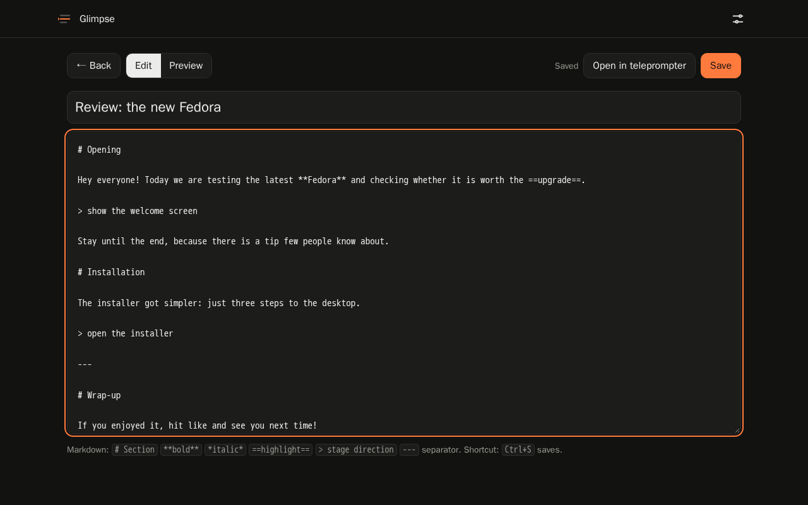
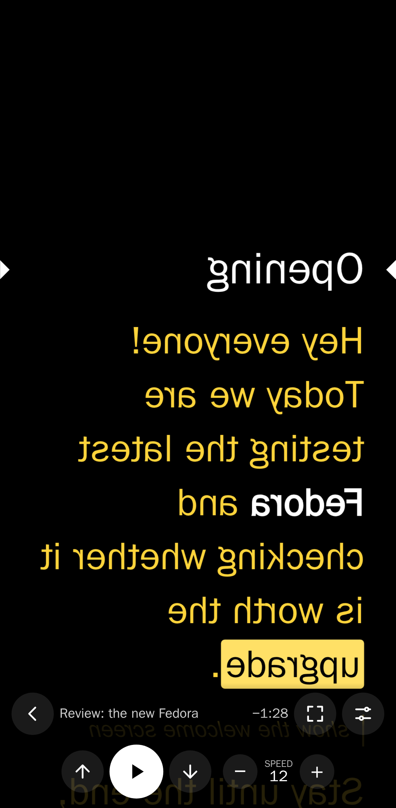
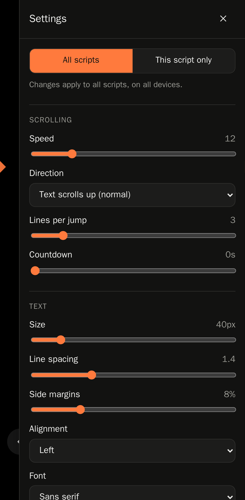
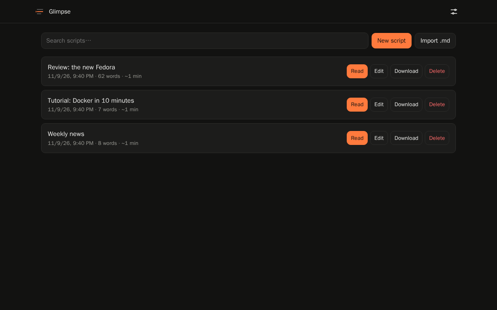
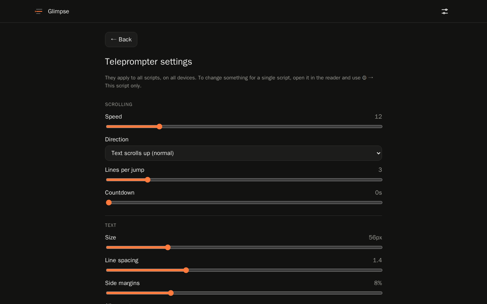
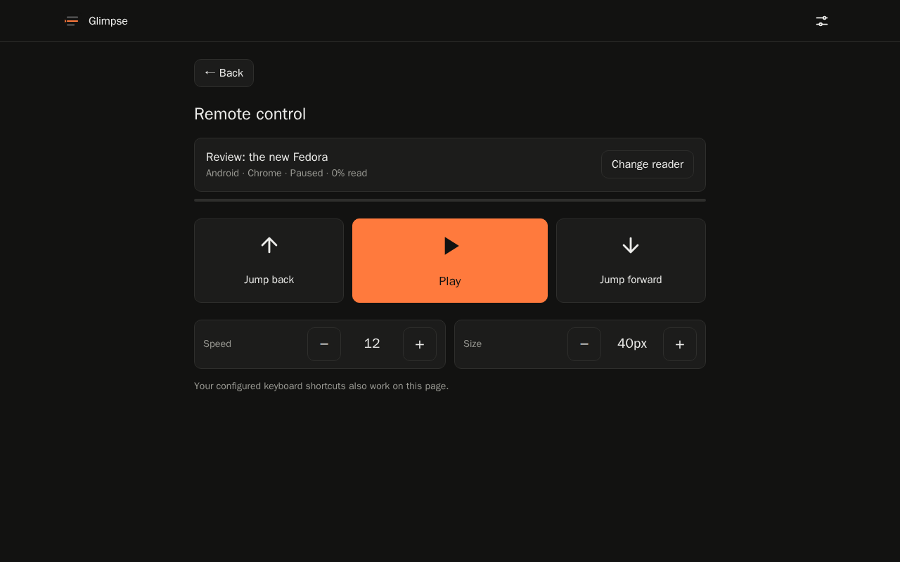
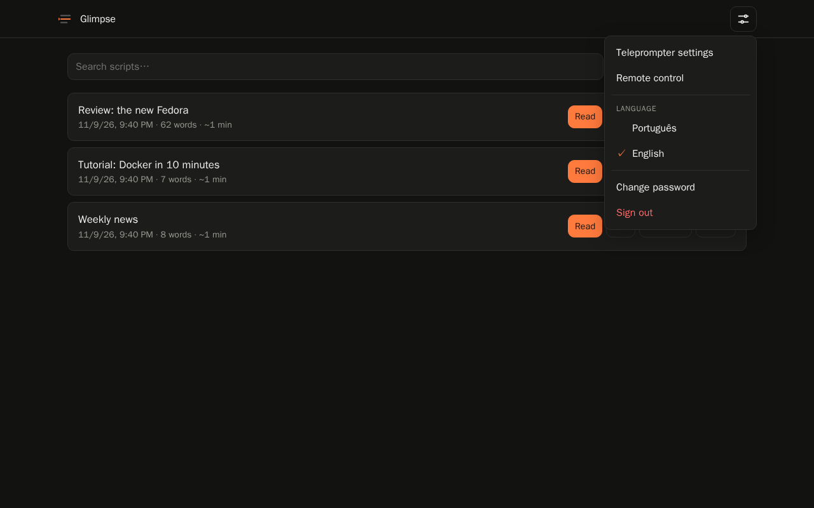
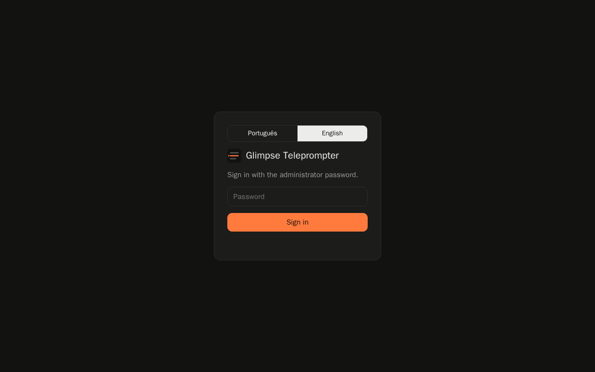

Markdown scripts
Write in the built-in editor or import .md files. Headings become sections, ==highlights== stand out and > notes appear as stage directions.
Open source · Self-hosted · Free
Glimpse is a web teleprompter you run on your own server. Write or upload scripts in Markdown from your computer, then read them on your phone or tablet, with mirroring, Bluetooth remotes and settings that follow you everywhere.
Runs with Docker on amd64 and arm64, including Raspberry Pi.
Simple to use, minimal to look at, and built for recording videos.
Write in the built-in editor or import .md files. Headings become sections, ==highlights== stand out and > notes appear as stage directions.
Set text size, speed and colors once: every script and device follows them. Need something different for one video? Give that script its own settings.
Horizontal and vertical mirroring for beam-splitter glass, reversible scrolling, reading guide, countdown and time left.
Map any key, page turner, media button or gamepad button to any action. Shortcuts are saved on the server and work on every device.
Open the remote control on a laptop and drive the reader on your phone: play, pause, speed, text size and jumps, with buttons or your keyboard.
Read in full screen and the screen never turns off mid-take, even over plain HTTP on your local network.
One container, one volume. Your scripts stay on your server; no account, no cloud, no tracking.
Choose the language on the sign-in screen and switch any time from the menu.
MIT licensed, tested on every change, with images published automatically to the GitHub Container Registry.

Sign in from any browser, create a script or drag your .md files into the library. Each script gets a title, and you can preview the Markdown before saving.

Open the same address on the device in front of the camera. Tap to play, drag to adjust, and use a Bluetooth remote to control the flow without touching the screen.

Adjust speed, size, colors, mirroring and shortcuts. Changes apply to all your scripts and devices, or only to the script you are reading.





You need Docker. Download the compose file and start the container:
curl -O https://raw.githubusercontent.com/dionatansimioni/glimpse-teleprompter/main/docker-compose.yml
docker compose up -dThen open http://YOUR-SERVER:3000 and create the administrator password on the first access.
Prefer a single command?
docker run -d --name glimpse -p 3000:3000 \
-v glimpse-data:/data \
ghcr.io/dionatansimioni/glimpse-teleprompter:latestTip: behind a reverse proxy with HTTPS you also get the browser's native Wake Lock and unrestricted full screen.
All of them can be remapped, including Bluetooth remote and gamepad buttons.
| Play / pause | Space Enter K ⏯ |
|---|---|
| Speed − / + | ← → |
| Jump back / forward | ↑ ↓ Page Up Page Down |
| Previous / next section | , . |
| Smaller / larger text | [ ] |
| Mirror horizontally / vertically | M V |
| Full screen | F |